ChipboxTUTORIAL
Let's make the tetris theme! You know the one!
BASICSThe workflow
PROJECTS contain multiple PAGES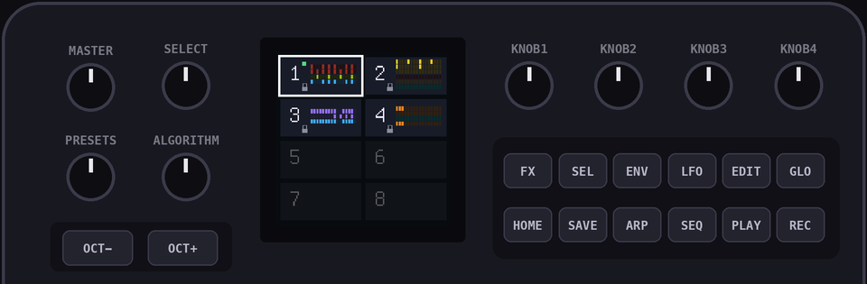
PAGES contain multiple CHANNELS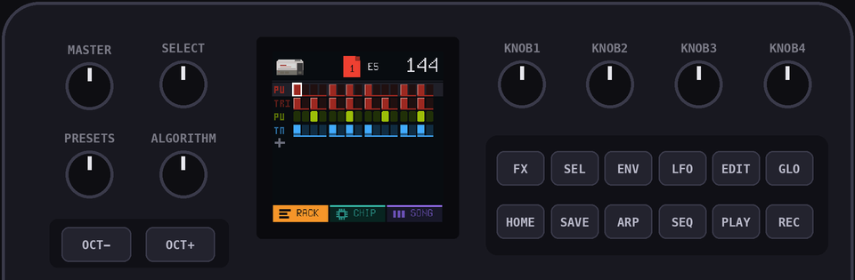
You build up the song by chaining
PAGES together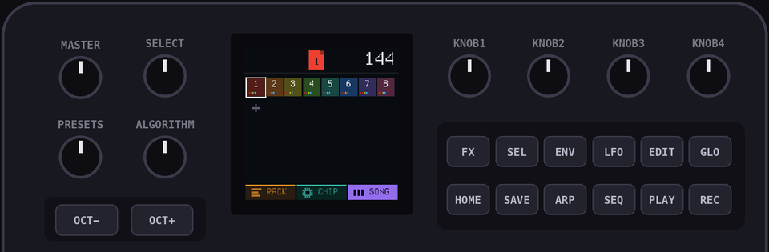
1Open a project
Hold
HOME to open the project view
Pick a free project with the
SELECT knob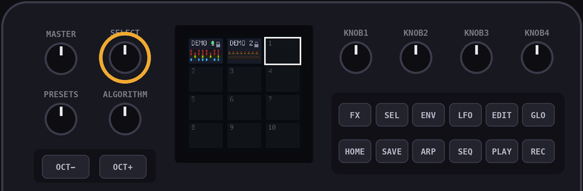
Press
HOME to open it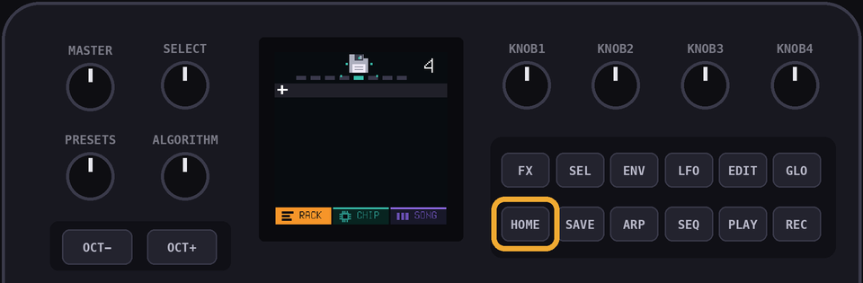
Protip: Hold
EDIT on a project to delete it!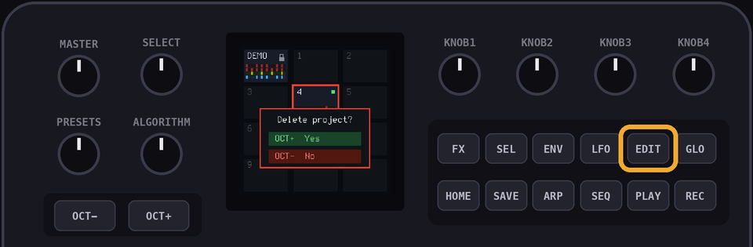
DOUBLE Protip: If you mess the demo project up, you can always restore it by holding
GLO and HOME to get to the SUPER HIDDEN MENU.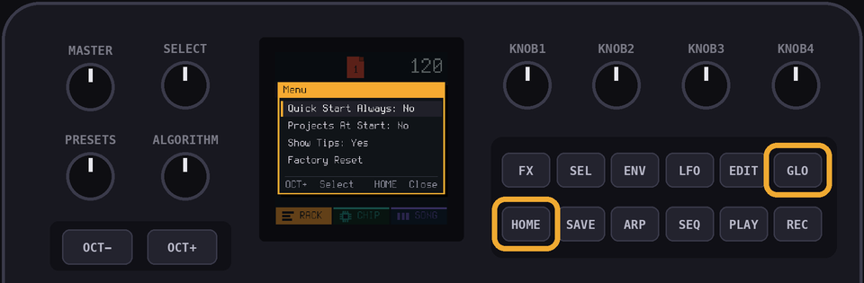
2Add channels
Hit
HOME until you're on the RACK view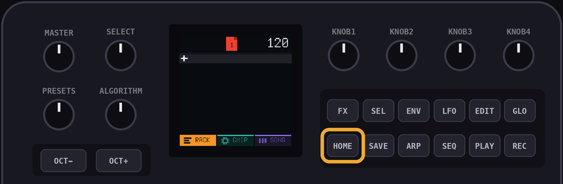
Twist that PRESETS knob to the
+ row (the one at the bottom)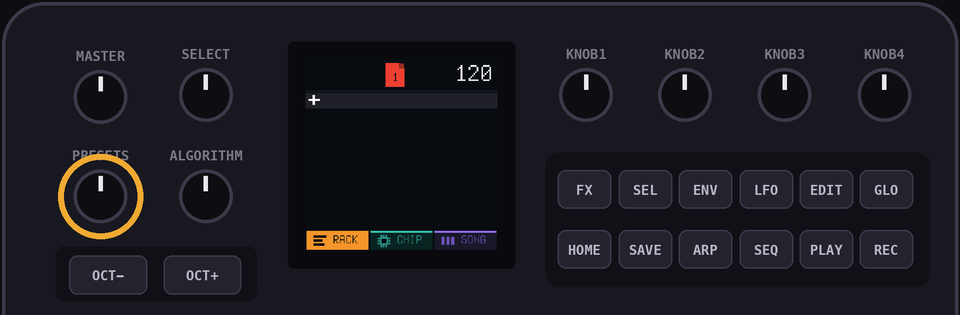
Press
OCT+ to open the 'Add Channel' view
Use
SELECT or PRESETS to pick a channel, then hit OCT+ to add it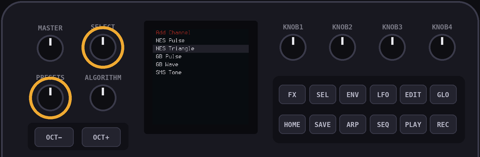
Add NES Pulse, NES Triangle, GB Pulse and SMS Tone, in that order
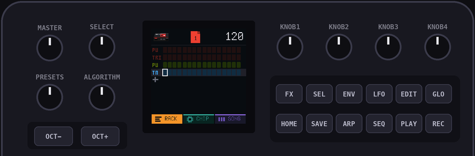
3Tempo
Set
KNOB 1 (Tempo) to 144
4Pages
Hit
HOME until you're in the SONG view. This is where we'll arrange our pages to make our song
Hit
OCT+ until you have 7 pages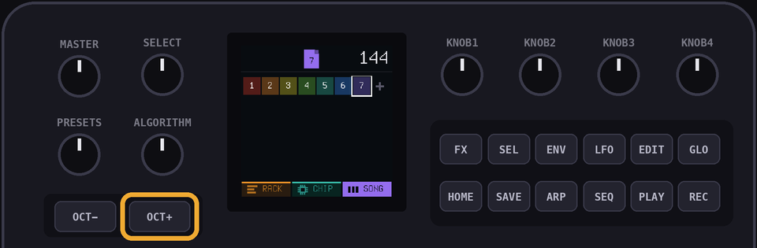
RACKEntering notes
There are two ways to enter notes
SEQ is the precise way. You enter the notes one at a time. Best for getting a melody exactly right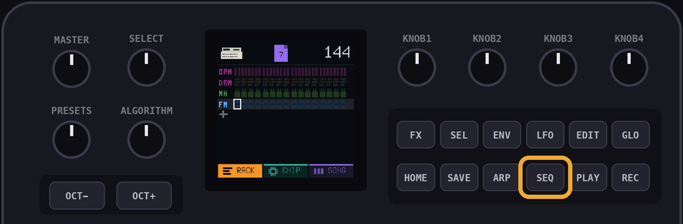
REC is for living in the moment! Play along, mess it up, have fun, make some happy accidents. Live your best life!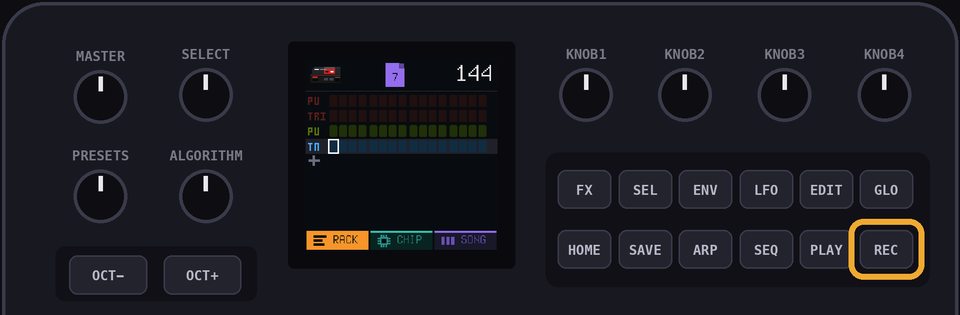
Mix them. Nobody's checking
5The lead
Here's the lead for the whole song:
1 2 3 4 5 6 7 8 9 10 11 12 13 14 15 16 page 1 E5 · · · B4 · C5 · D5 · · · C5 · B4 · page 2 A4 · · · A4 · C5 · E5 · · · D5 · C5 · page 3 B4 · · · · · C5 · D5 · · · E5 · · · page 4 C5 · · · A4 · · · A4 · · · · · · · page 5 D5 · · · · · F5 · A5 · · · G5 · F5 · page 6 E5 · · · · · C5 · E5 · · · D5 · C5 · page 7 B4 · · · B4 · C5 · D5 · · · E5 · · ·
Page 8 is page 4 again, so there are only 7 to enter. We'll sort that out at the end
SEQPage 1, the precise way
Twist
PRESETS to the top channel (NES PU)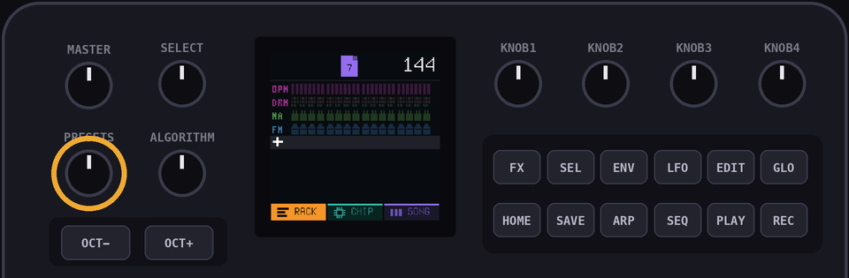
Double check you're on page 1. If not, twist that
ALGORITHM knob until you are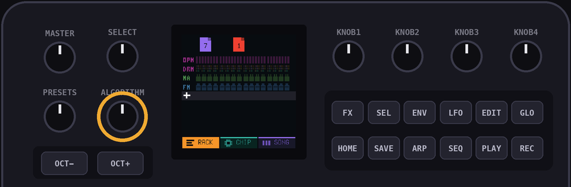
Hit
SEQ
Here you can take your time and enter the page's notes one by one. Page 1 starts with an E5. Try to find it yourself! If you get it wrong, use
SELECT to shift the cursor back to that step and try again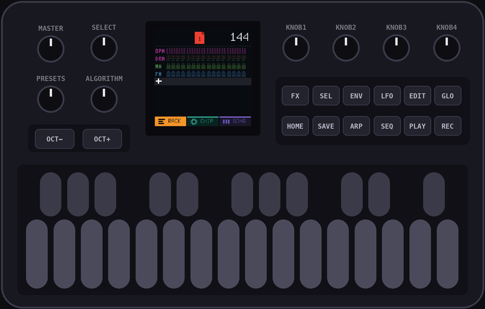
PROTIP: If you can't find the right key, it might be on a different octave. Use
OCT+ or OCT- to change octaveThe next note, B4, is on step 5. To leave gaps for rests, skip around with the
SELECT knob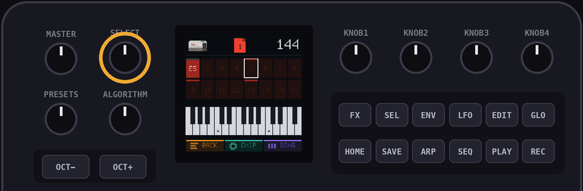
Carry on down the row: C5 on step 7, D5 on step 9, C5 on step 13 and B4 on step 15

Want a long note? Hold the key and turn
KNOB 2. A line under the note shows how far it goes
If you mess up a note, use
SELECT to move the cursor to it, then either replace it with the right note or hit EDIT to delete it altogether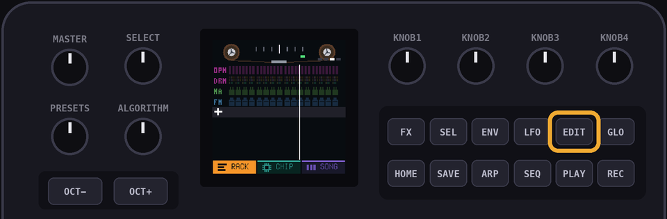
PROTIP: Try hitting
PLAY on this view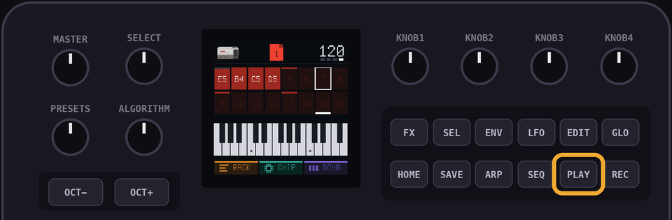
Use the
ALGORITHM knob to change the page, but keep the channel the same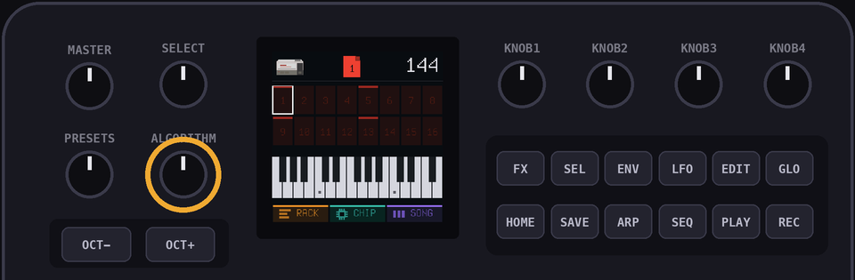
As always,
OCT+ and OCT- change the octave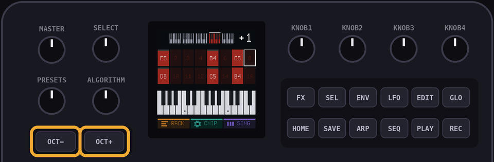
When you're happy with your masterpiece, hit
HOME to get back to the RACK view
RECPage 1, the vibes way
Same start:
PRESETS to the top channel, and check you're on page 1Hit
REC. The page starts looping and every other channel ducks so you can hear yourself
Play along as the line passes each step. Hold a key down for a long note, then hit
ARP to show a line under it for how long it lasts
Too quick? Turn
SELECT left once for slooooow motion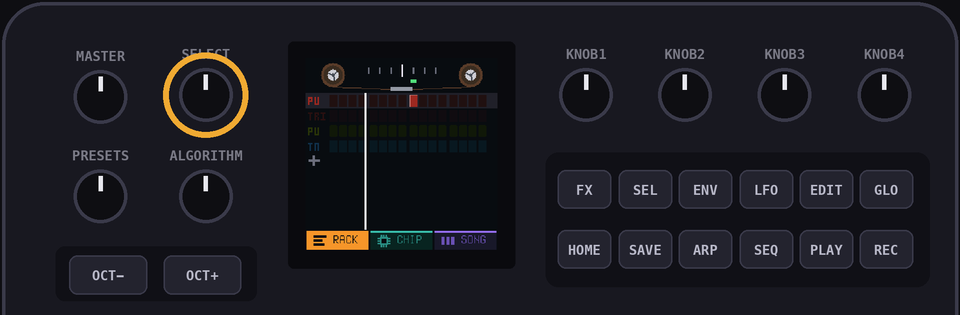
Hold
EDIT while it plays to wipe notes as the line passes themHit
REC again when you've got itUNDOOops
If you ever make a mistake, hit
LFO to undo it
PROTIP:
LFO kind of sort of rhymes with undo. Kind of. I mean. Just pretend it does...5+Pages 2 to 7
Flip to the next page with the
ALGORITHM knob and enter its row, either way. Page 7 and you're done with the leadPage 5 has an A5, which is up past the end of the keyboard. Hit
OCT+ to reach it6The bass
Same idea, a different channel:
1 2 3 4 5 6 7 8 9 10 11 12 13 14 15 16 page 1 E2 · E2 · E2 · E2 · E2 · E2 · E2 · E2 · page 2 A2 · A2 · A2 · A2 · A2 · A2 · A2 · A2 · page 3 E2 · E2 · E2 · E2 · E2 · E2 · E2 · E2 · page 4 A2 · A2 · A2 · A2 · A2 · A2 · A2 · A2 · page 5 D3 · D3 · D3 · D3 · D3 · D3 · D3 · D3 · page 6 C3 · C3 · C3 · C3 · C3 · C3 · C3 · C3 · page 7 E2 · E2 · E2 · E2 · E2 · E2 · E2 · E2 ·
Twist PRESETS to the second channel (the triangle). The
+ row is a stop on the way roundHit
OCT- twice. The keyboard drops into bass land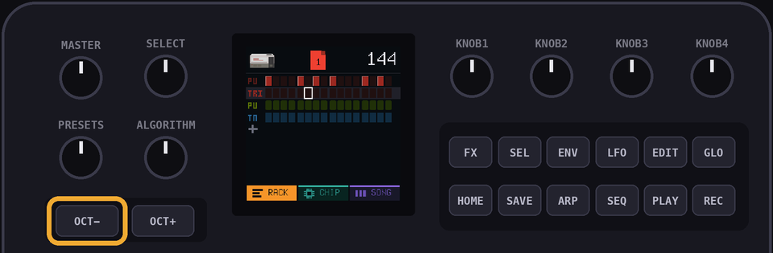
Hit
SEQ and find the E2. Skip a step with SELECT, press it again, and so on. (Can't find it? Check your octave)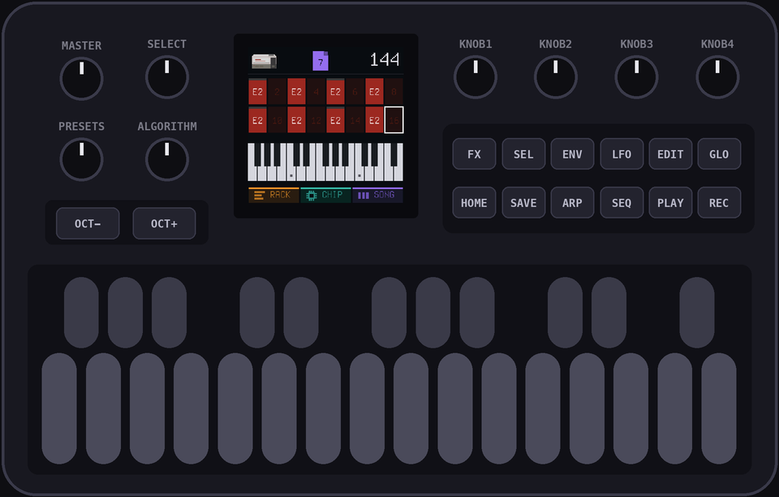
7The stabs
Four notes a page this time:
1 2 3 4 5 6 7 8 9 10 11 12 13 14 15 16 page 1 · · B3 · · · E4 · · · B3 · · · E4 · page 2 · · C4 · · · E4 · · · C4 · · · E4 · page 3 · · B3 · · · E4 · · · B3 · · · E4 · page 4 · · C4 · · · E4 · · · C4 · · · E4 · page 5 · · D4 · · · F4 · · · D4 · · · F4 · page 6 · · C4 · · · E4 · · · C4 · · · E4 · page 7 · · B3 · · · E4 · · · B3 · · · E4 ·
Twist
PRESETS to the third channel (the GB pulse)OCT+ twice to get the keyboard back to the middle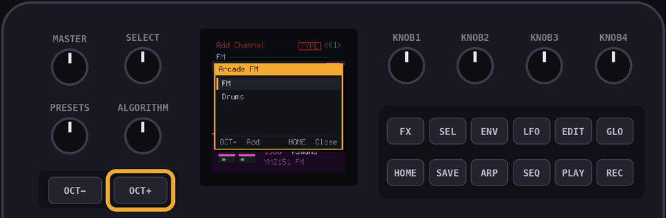
Hit
SEQ and find the B3 and the E4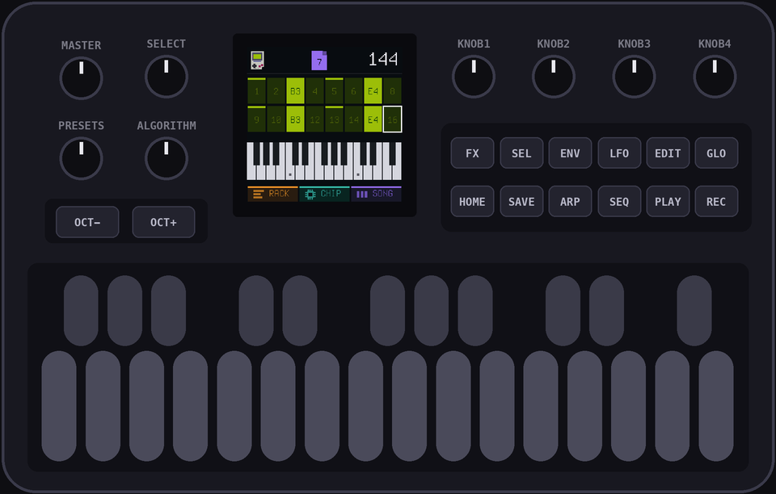
8Thicker
Everything's a bit thin. Doubling the lead an octave down fixes that
Twist
PRESETS to the fourth channel (the SMS one), hit OCT- once, and enter the lead again. Yes, again. It's worth itThen hit
HOME to get to the CHIP view
Turn
KNOB 2 (VOL) down until it hugs the lead instead of fighting it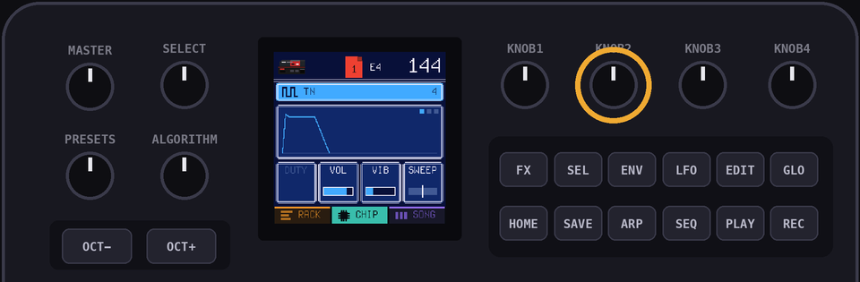
CHIPShape the sound
This is where you shape how a channel sounds. Every channel has a patch, the settings behind its sound, and
KNOB 1 to KNOB 4 turn them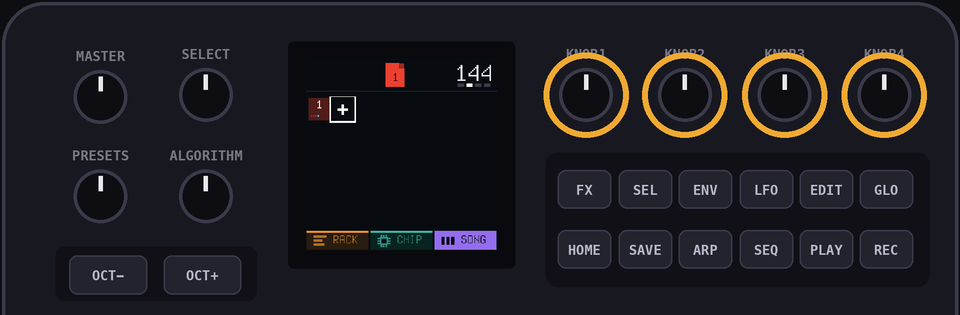
A patch has three pages: tone, envelope and arp.
ALGORITHM flips between them
9The song
Hit
HOME to get back to the SONG view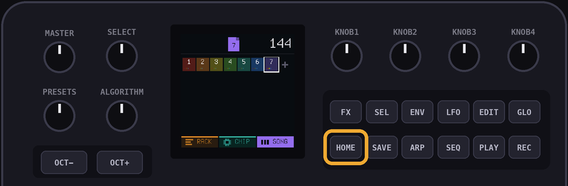
The 8th page of this song is actually the same as the 4th, so let's just cue up page 4 again. Hit
OCT+ to add an 8th page, then select it with the cursor, and turn PRESETS until it says 4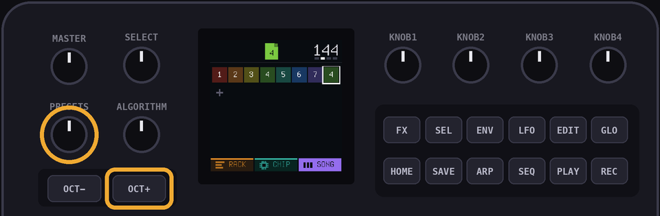
PLAY. That's Tetris. You made that!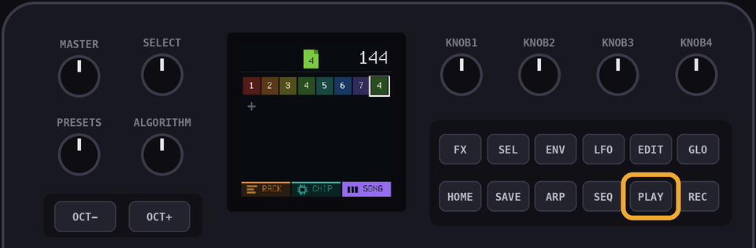
PROTIP: Want to hear just one page on its own? Go to the RACK view, pick the page with
ALGORITHM and hold PLAY. It loops that page. A quick tap plays on from itFXMess with it
Hit
FX, then hold the white keys
Hold the first pad, TAPE, and twist
SELECT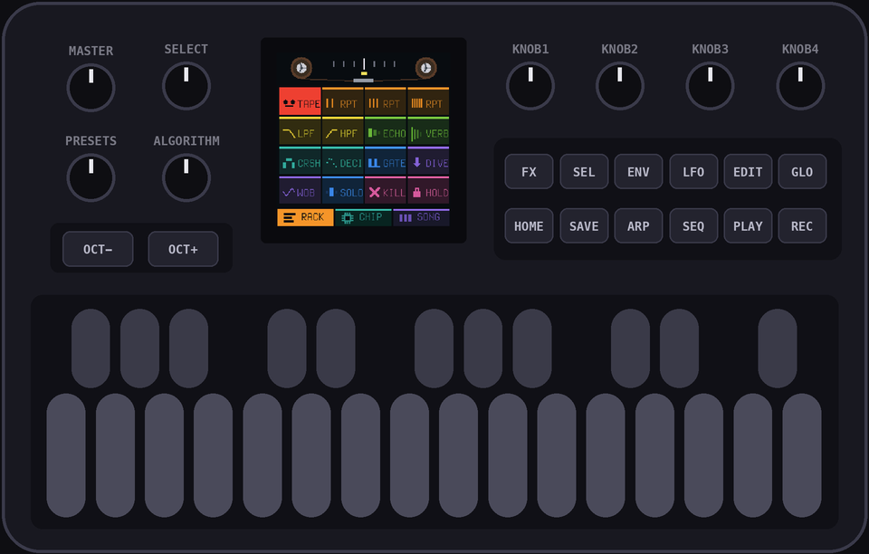
Hold
EDIT in the SONG view to copy a page, then change the copyGLO is help